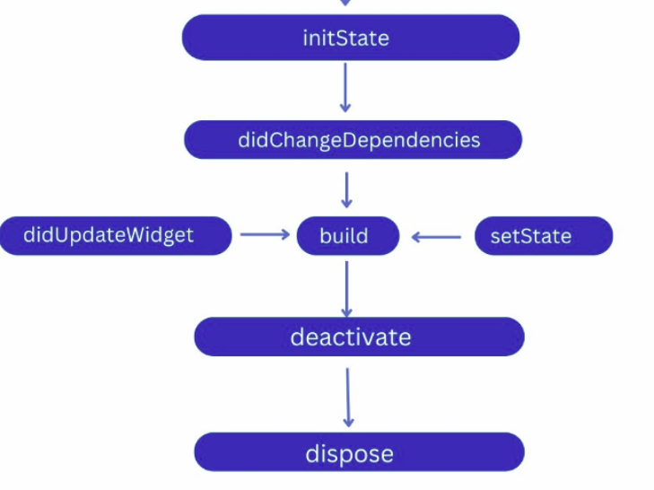

Prueba: Evaluativa
Asignatura: Desarrollo Apps
Resultado de Aprendizaje: Flutter
Nombre alumno:
Calificación:
5. Examen tipo test – Flutter
Responde a las siguientes preguntas de tipo test.
Cada pregunta tiene una única respuesta correcta.
Cada respuesta incorrecta resta un 25 % del valor de la pregunta.
-
¿Qué es Flutter?
- A) Es un SDK programado en Dart, desarrollado por Google.
- B) Es un lenguaje de programación tipado basado en Javascript.
- C) Framework que permite construir aplicaciones móviles nativas.
- D) Todas son correctas.
-
Para obtener el resultado que se ve en la siguiente imagen, ¿qué código se ha utilizado?
- A) Opción A
- B) Opción B
- C) Ninguno de los anteriores. Es simplemente un array de imágenes dentro de un Container.
-
¿El siguiente código qué hace?
- A) Navega desde la página actual hasta SecondRoute.
- B) Si estamos en SecondRoute regresamos a la página anterior mediante push, si no navegamos a SecondRoute.
- C) No hace nada, faltaría especificar la página actual.
-
¿Por qué añadimos estas líneas en el archivo de configuración?
- A) Se añaden para poder utilizar imágenes en el proyecto.
- B) No es obligatorio añadirlo, pero facilita la integración al insertar una imagen.
- C) Descarga una imagen del repositorio conectado.
-
El siguiente esquema se corresponde con:

- A) StatefulWidget
- B) StatelessWidget
- C) Ciclo de vida de una app Android
- D) Ciclo de vida de una app iOS
-
¿Qué hace el widget Hero?
- A) Se utiliza para hacer transiciones animadas entre pantallas.
- B) Es un widget para mostrar imágenes de superhéroes.
- C) Permite crear listados dinámicos.
- D) Hace clicables los elementos.
-
Identifica de manera única el Form y permite validarlo posteriormente:
- A) GlobalKey
- B) Submit
- C) FormValidator
- D) TextFormField
-
¿Para qué se utiliza ModalRoute?
- A) Para pasar parámetros de una pantalla a otra.
- B) Para forzar el uso de datos concretos.
- C) Para permitir navegación bidireccional.
-
¿Qué hace pushReplacementNamed?
- A) Navega eliminando la página actual del historial.
- B) Navega permitiendo siempre volver a la anterior.
- C) Cambia el nombre de la ruta destino.
-
¿Qué método se utiliza para mostrar un diálogo?
- A) showDialog()
- B) dialog()
- C) No existe, debe construirse manualmente.
-
¿Cuál de las siguientes ventajas de Flutter es falsa?
- A) Todas son ciertas
- B) Compilación nativa
- C) Creación de interfaces gráficas
- D) El aspecto se mimetiza con el SO completamente
-
¿Qué es un widget?
- A) Bloques que definen la interfaz y pueden interactuar entre ellos.
- B) Bloques totalmente independientes.
- C) Elementos estáticos sin interacción.
- D) Conectores entre hardware y servicios.
-
StatelessWidget:
- A) Widgets sin estado que muestran información estática.
- B) Widgets con estado dinámico.
- C) Widgets dinámicos sin interacción.
-
StatefulWidget:
- A) Widgets con estado.
- B) Responden a interacciones del usuario.
- C) Mantienen su estado durante el ciclo de vida.
- D) Todas son ciertas.
-
Para programar una aplicación Flutter es necesario instalar previamente su SDK.
- A) Cierto
- B) Falso
-
¿En qué archivo se añaden las dependencias y configuración del proyecto?
- A) pubspec.yaml
- B) pubspec.dart
- C) settings.yaml
- D) settings.dart
-
¿Se puede tener más de un MaterialApp en la aplicación?
- A) No, solo uno. El resto de pantallas se gestionan con Scaffold.
- B) Sí, sin restricciones.
- C) Sí, pero solo con Scaffold.
-
Las propiedades mainAxisAlignment y crossAxisAlignment permiten:
- A) Alinear los hijos dentro del widget.
- B) Establecer tamaños máximos y mínimos.
- C) Definir únicamente tamaños mínimos.